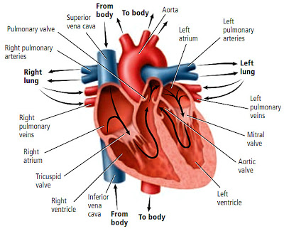
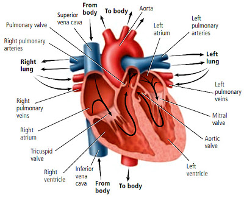

AccessDenied Access Denied QBBG5306NRPBW6NP a275j/H5F5xsAtDuDFO65r7jnUdbJI+ikxpp+k4miHSMRYfzNELDS2/nRsq3vayrfrjVgvsA82Y=
- Penyakit Penyakit Jantung - Gejala, Penyebab, Pengobatan .
- Jantung - Gejala, Penyakit, dan Cara Mengobati | Halodoc.com
- Jangan Abaikan Gejala-Gejala Jantung Bengkak Berikut Ini .
- 11 Gejala Penyakit Jantung yang Bisa Terlihat di Kulit dan .
- Jantung - Wikipedia bahasa Indonesia, ensiklopedia bebas
- Penyakit Jantung - Pengertian, Gejala, Penyebab, Faktor .
- Mengatasi Sakit Jantung dan Serangan Jantung – Pemerintah .
- Waspada dan Kenali Lebih Jauh Ciri-Ciri Sakit Jantung .
- Patut waspada, inilah 4 ciri-ciri penyakit jantung - Kesehatan
- Tempat-Tempat Nyeri Pada Gangguan Jantung - Direktorat .
- Penyakit Penyakit Jantung - Gejala, Penyebab, Pengobatan .
adalah organ terpenting dalam tubuh manusia dan mempunyai ukuran sebesar kapalan tangan. berfungsi memompa dan menyebarkan darah . - Jantung - Gejala, Penyakit, dan Cara Mengobati | Halodoc.com
Di Indonesia sendiri, penyakit kardiovaskuler, stroke dan penyakit koroner adalah penyebab utama kematian yang menyebabkan lebih dari 470.000 . - Jangan Abaikan Gejala-Gejala Jantung Bengkak Berikut Ini .
(bahasa Latin: cor) adalah sebuah rongga, rongga organ berotot yang memompa darah lewat pembuluh darah oleh kontraksi berirama yang berulang. - 11 Gejala Penyakit Jantung yang Bisa Terlihat di Kulit dan .
7 hari yang lalu — - Jantung - Wikipedia bahasa Indonesia, ensiklopedia bebas
Tingginya angka kematian akibat penyakit , khususnya serangan , selayaknya menjadi perhatian masyarakat dan petugas kesehatan sehingga . - Penyakit Jantung - Pengertian, Gejala, Penyebab, Faktor .
Gejala paling umum dari penyakit coroner adalah angina atau angina pectoris yang juga dikenal sebagai nyeri dada. Angina dapat digambarkan . - Mengatasi Sakit Jantung dan Serangan Jantung – Pemerintah .
Gagal , merupakan suatu kegagalan otot untuk memompakan darah secara memadai ke seluruh tubuh. Aritmia, merupakan suatu gangguan . - Waspada dan Kenali Lebih Jauh Ciri-Ciri Sakit Jantung .
3 hari yang lalu — - Patut waspada, inilah 4 ciri-ciri penyakit jantung - Kesehatan
16 Okt 2020 — - Tempat-Tempat Nyeri Pada Gangguan Jantung - Direktorat .
7 Mei 2021 —
adalah organ terpenting dalam tubuh manusia dan mempunyai ukuran sebesar kapalan tangan. berfungsi memompa dan menyebarkan darah .
Di Indonesia sendiri, penyakit kardiovaskuler, stroke dan penyakit koroner adalah penyebab utama kematian yang menyebabkan lebih dari 470.000 .
(bahasa Latin: cor) adalah sebuah rongga, rongga organ berotot yang memompa darah lewat pembuluh darah oleh kontraksi berirama yang berulang.
7 hari yang lalu —
Tingginya angka kematian akibat penyakit , khususnya serangan , selayaknya menjadi perhatian masyarakat dan petugas kesehatan sehingga .
Gejala paling umum dari penyakit coroner adalah angina atau angina pectoris yang juga dikenal sebagai nyeri dada. Angina dapat digambarkan .
Gagal , merupakan suatu kegagalan otot untuk memompakan darah secara memadai ke seluruh tubuh. Aritmia, merupakan suatu gangguan .
3 hari yang lalu —
16 Okt 2020 —
7 Mei 2021 —
 
